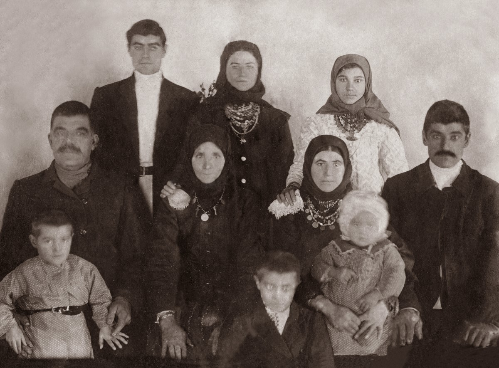
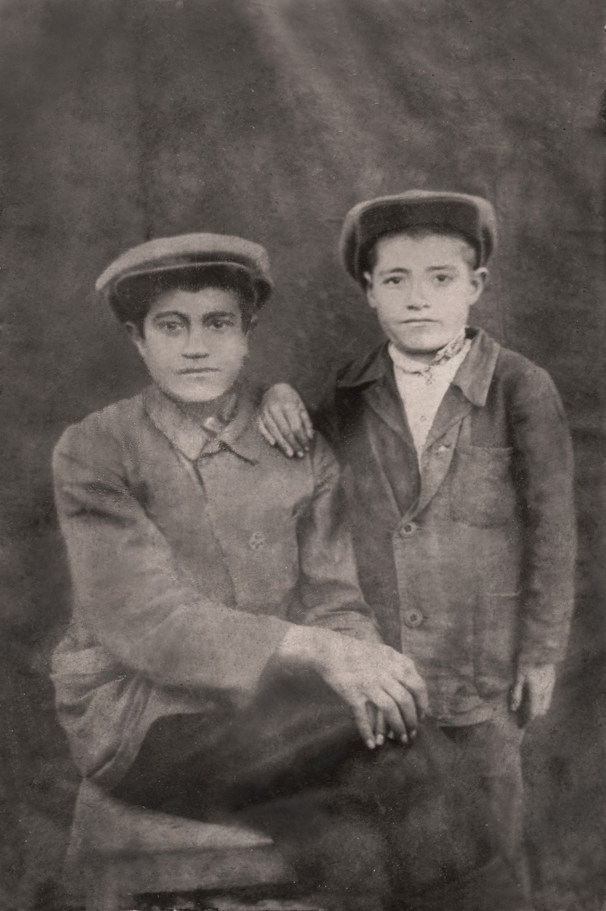
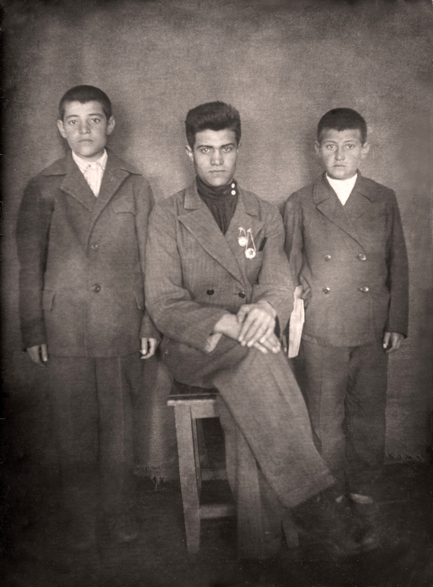
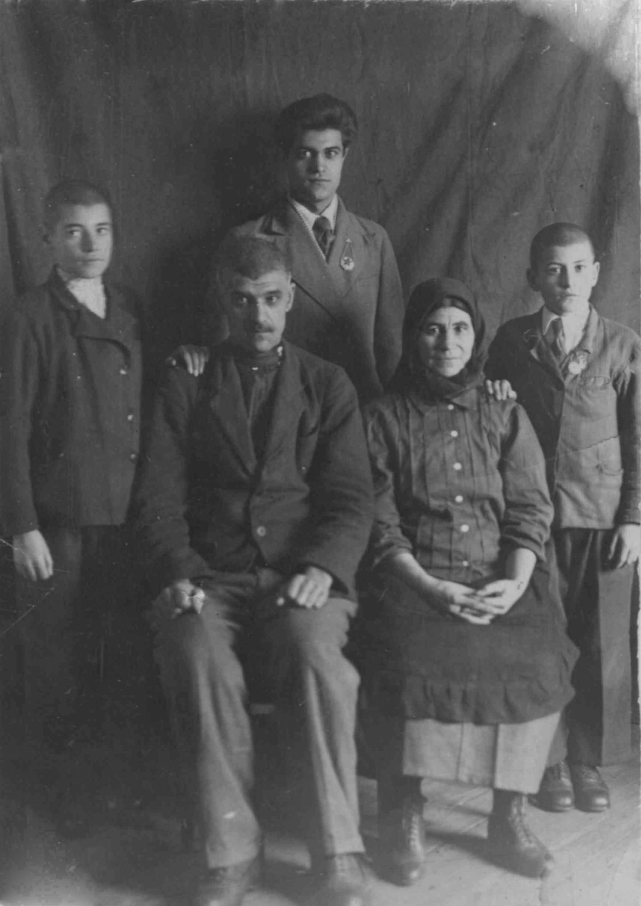
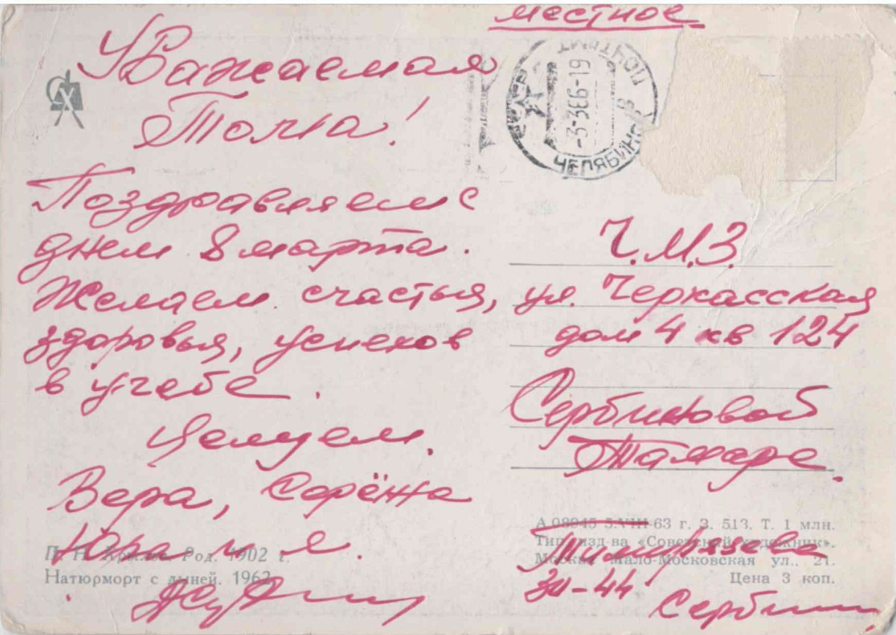
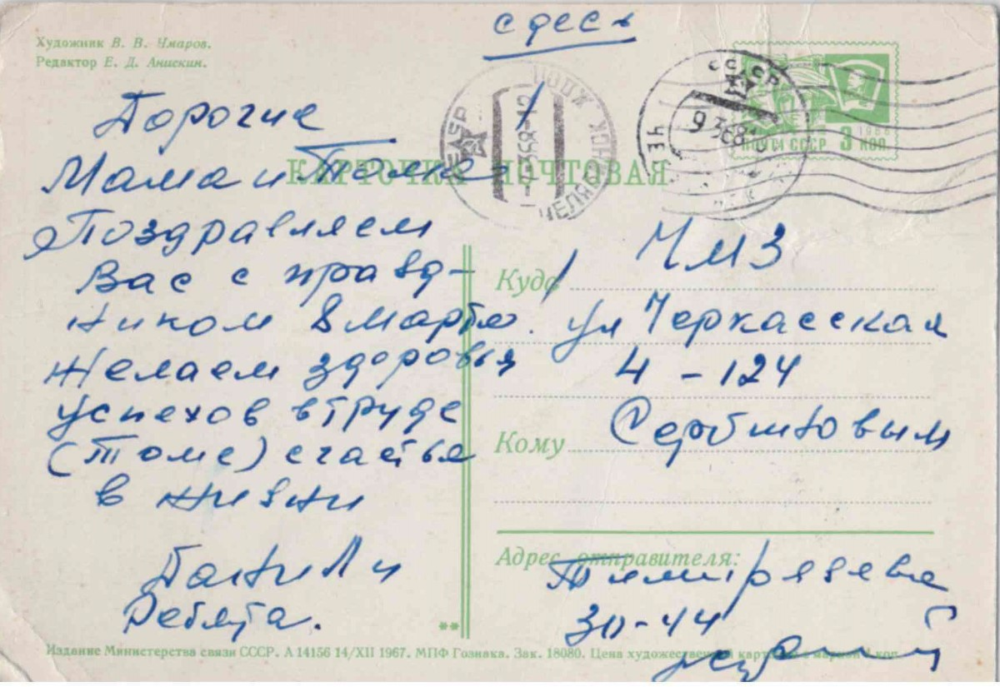
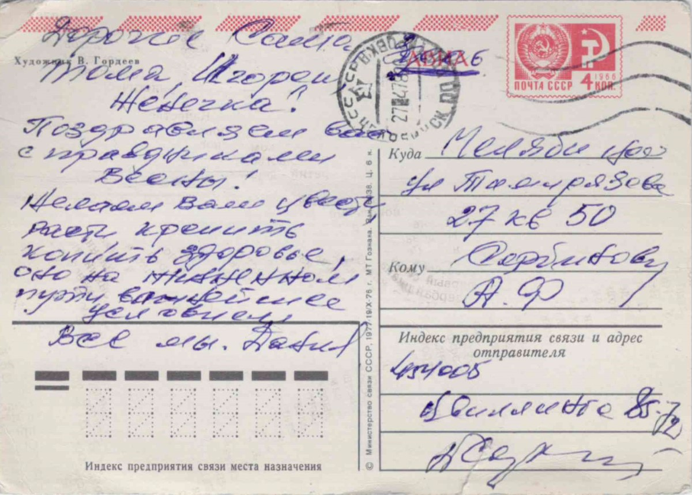

Родился: 26.10.1925, с. Зеленое (с. Зеленовка)
Умер: 25.07.2012, г. Челябинск
Род: Сербиновы
Продолжительность жизни: 86
Место жительства: г. Челябинск
Основное занятие: Диспетчер на железной дороге
Запись о рождении https://www.familysearch.org/ark:/61903/3:1:3Q9M-CS9L-49VN-7?i=363&cat=1405206
родился в с. Зеленовка, В мае 1931 года вместе с родителями раскулачен и в июне 1931 под конвоем года выслан в Челябинскую область, г. Копейск, пос. шахты 205.
Работал поездным диспетчером в Челябинском отделении железной дороги. Был представлен награждению медалью "Герой социалистрического труда", но невовремя поссорился с начальником и Героя не получил, отделался "Почетным железнодорожником".
Кавалер ордена "Знак Почета" (Указ Президиума Верховного Совета СССР № 5667-1Х от 13 мая 1977 г.) Орден вручен 15.07.1977 (ОГАЧО Ф. 274 О. 12 Д. 152 Л. 4).
Отец: Сербинов Федор Иванович
Мать: Сербинова (Плачкова) Мария Филипповна
Единокровная сестра: Сербинова Надежда Федоровна
Единокровный брат: Сербинов Стефан Федорович
Единокровная сестра: Сербинова Мария Федоровна
Брат: Сербинов Иван Федорович
Брат: Сербинов Степан Федорович
Сестра: Сербинова Елена Федоровна
Брат: Сербинов Дмитрий Федорович
Брат: Сербинов Александр Федорович
Жена: Сербинова (Клюева) Вера Ивановна
Сын: Сербинов Сергей Данилович
Сын: Сербинов Юрий Данилович
Семья Сербинова Ивана Федоровича 1873 г.р.: около 1929, с. Зеленое (с. Зеленовка). Рукой Сербинова Александра Федоровича на обороте: 1. Иван Федорович (дедушка) 1870-1932 2. Василий Иванович (дядя) 3. Степанида Ивановна (бабушка) 1870-1932 3. Евдокия (тетя жена В.И.) 5. Мама 1895-1975 29/12/75 6. Надежда Федоровна (сестра) 7. Отец (1895-1965) 28/10/65. Сербиновы Иван и Даниил Федоровичи: 04.1933, г. Копейск. Подпись на обороте: Апрель 1933 г. Шахта № 205. Сербиновы Даниил, Иван и Александр Федоровичи: около 1940, г. Копейск. Семья Сербинова Федора Ивановича: 27.12.1940, г. Копейск. Рукой Сербинова Ивана Федоровича на обороте: Фотография 27/12/40 г. Копейск шахта № 205 Семейная карточка 1. Сербинов Ф.И. 2. Сербинова М.Ф. 3. Сербинов И.Ф. 4. Сербинов Д.Ф. 5. Сербинов А.Ф. Открытка: 03.03.1966, г. Челябинск. |
Открытка: 07.03.1968, г. Челябинск. Открытка: 27.04.1978, г. Челябинск. |